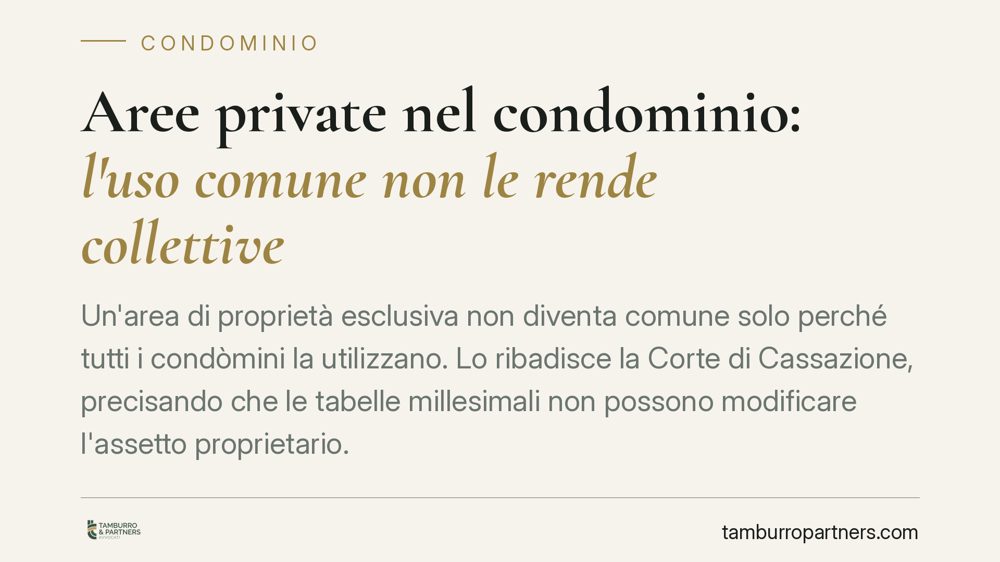
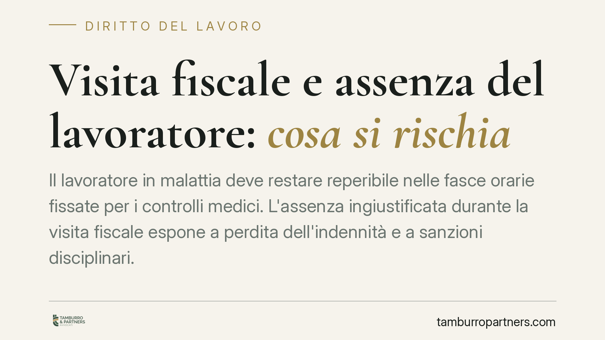
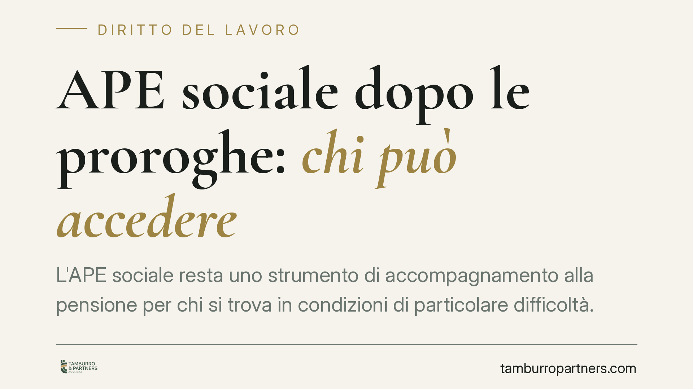
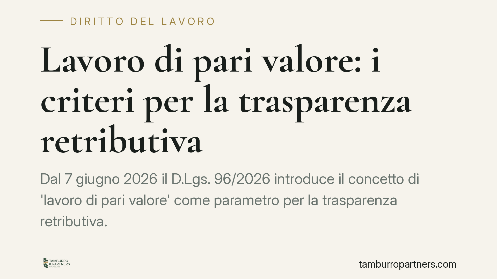
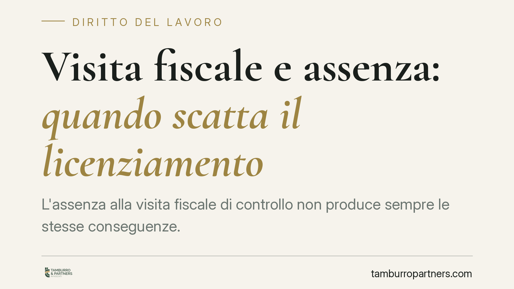
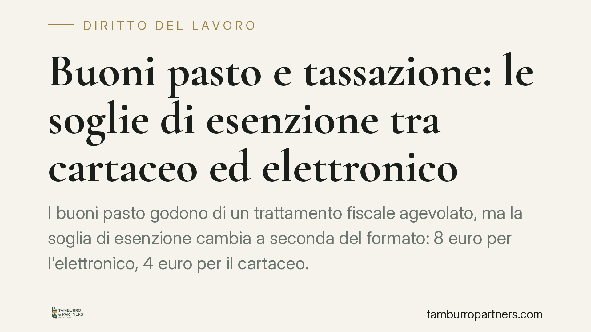
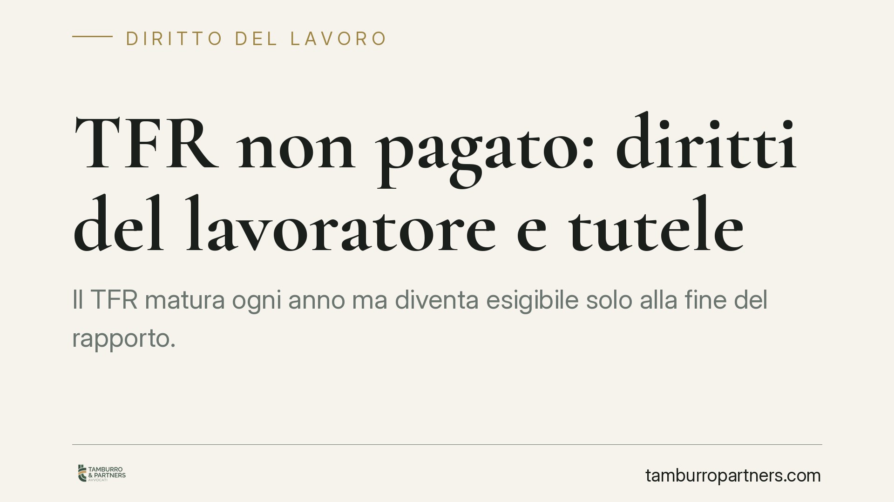
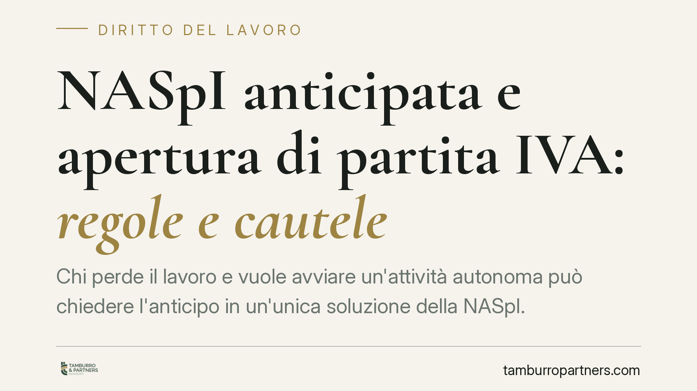
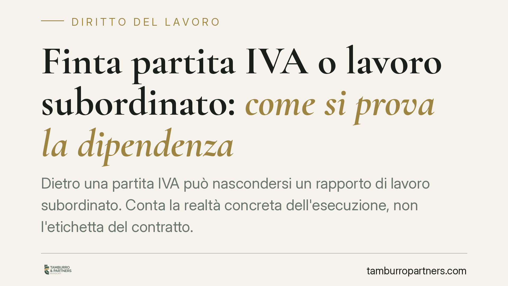
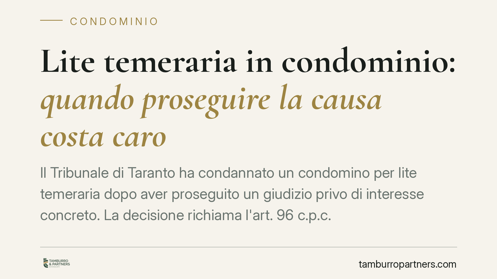

Infiltrazioni da piazza pubblica: il Comune risponde dei danni a box e cantine
Acque che filtrano da una piazza pubblica verso i box e le cantine sottostanti di un condominio: chi paga? Il Tribunale di Livorno individua nel Comune il responsabile, in qualità …

Canna fumaria in facciata: quando non lede il decoro architettonico
Una canna fumaria installata sulla facciata condominiale non è di per sé vietata. La Corte d'Appello di Torino ha precisato che, quando il prospetto è già alterato da condizionator…

Canna fumaria in condominio: serve davvero il via libera dell'assemblea?
Chi vuole installare una canna fumaria sulla facciata condominiale spesso teme di dover passare dall'assemblea. In realtà la legge consente al singolo condomino di usare le parti c…

Mutuo a tasso fisso o variabile: la scelta e la leva della surroga
La scelta tra mutuo a tasso fisso e variabile non è solo questione di numeri: è una decisione contrattuale che vincola il debitore per decenni. In un quadro di possibili oscillazio…

Lavoro del richiedente asilo: i tempi di accesso all'occupazione
Quando può iniziare a lavorare in Italia chi ha presentato domanda di protezione internazionale? La regola vigente fissa un'attesa di sessanta giorni dalla domanda. Si discute di u…

Dimissioni dopo la nascita del figlio: il nodo del preavviso
Chi si dimette nel primo anno di vita del figlio gode di una tutela rafforzata, con l'esonero dal preavviso e il diritto alla relativa indennità. La Cassazione ha però chiarito che…

Aree private nel condominio: l'uso comune non le rende collettive
Un'area di proprietà esclusiva non diventa comune solo perché tutti i condòmini la utilizzano. Lo ribadisce la Corte di Cassazione, precisando che le tabelle millesimali non posson…

Visita fiscale e assenza del lavoratore: cosa si rischia
Il lavoratore in malattia deve restare reperibile nelle fasce orarie fissate per i controlli medici. L'assenza ingiustificata durante la visita fiscale espone a perdita dell'indenn…

APE sociale dopo le proroghe: chi può accedere
L'APE sociale resta uno strumento di accompagnamento alla pensione per chi si trova in condizioni di particolare difficoltà. Le proroghe normative hanno tenuto in vita la misura, m…

Lavoro di pari valore: i criteri per la trasparenza retributiva
Dal 7 giugno 2026 il D.Lgs. 96/2026 introduce il concetto di 'lavoro di pari valore' come parametro per la trasparenza retributiva. Le aziende dovranno adottare criteri oggettivi e…

Visita fiscale e assenza: quando scatta il licenziamento
L'assenza alla visita fiscale di controllo non produce sempre le stesse conseguenze. Una mancanza occasionale e giustificata incide di norma sul piano economico; la recidiva può in…
Trasparenza retributiva: i dipendenti possono sapere quanto guadagnano i colleghi?
Il recepimento della Direttiva UE 2023/970 sulla trasparenza retributiva riconosce ai lavoratori il diritto di ottenere informazioni sui livelli retributivi medi, ripartiti per cat…

Buoni pasto e tassazione: le soglie di esenzione tra cartaceo ed elettronico
I buoni pasto godono di un trattamento fiscale agevolato, ma la soglia di esenzione cambia a seconda del formato: 8 euro per l'elettronico, 4 euro per il cartaceo. Si discute di un…
Influencer e redditi dai social: gli obblighi fiscali, previdenziali e di qualificazione del rapporto
Con la Direttiva DAC7 il Fisco riceve dalle piattaforme i dati sui compensi di creator e influencer. Per chi produce reddito dai social cambia molto: oltre agli obblighi dichiarati…

TFR non pagato: diritti del lavoratore e tutele
Il TFR matura ogni anno ma diventa esigibile solo alla fine del rapporto. Quando il datore non paga, il lavoratore dispone di strumenti precisi: diffida, decreto ingiuntivo, esecuz…
Lavoro straordinario in giudizio: prova e onere probatorio
Provare le ore di straordinario in giudizio resta uno dei punti più delicati del contenzioso di lavoro. La regola è chiara: chi chiede il pagamento deve dimostrarlo. Ma la giurispr…

NASpI anticipata e apertura di partita IVA: regole e cautele
Chi perde il lavoro e vuole avviare un'attività autonoma può chiedere l'anticipo in un'unica soluzione della NASpI. È uno strumento utile, ma rigido: termini stretti, condizioni di…

Finta partita IVA o lavoro subordinato: come si prova la dipendenza
Dietro una partita IVA può nascondersi un rapporto di lavoro subordinato. Conta la realtà concreta dell'esecuzione, non l'etichetta del contratto. Ma è il lavoratore a dover provar…

Lite temeraria in condominio: quando proseguire la causa costa caro
Il Tribunale di Taranto ha condannato un condomino per lite temeraria dopo aver proseguito un giudizio privo di interesse concreto. La decisione richiama l'art. 96 c.p.c. e l'abuso…

Balconi e decoro architettonico: i limiti per divisori e tende
Installare un divisorio o una tenda sul balcone per guadagnare privacy è prassi diffusa. Ma quando l'intervento incide sull'estetica dell'edificio o limita aria e luce del vicino, …

Licenziamento per finta malattia: la difesa del lavoratore
Il licenziamento per finta malattia è una delle contestazioni disciplinari più frequenti. L'azienda accusa il dipendente di simulare l'infermità o di svolgere attività incompatibil…

Licenziamento per motivi economici e diritto alla NASpI: requisiti e regole 2025
Il licenziamento per giustificato motivo oggettivo, legato a ragioni economiche o organizzative dell'impresa, è una cessazione involontaria del rapporto. Per questo apre la strada …

Spese legali tributarie: lo sgravio tardivo non salva il Fisco dalla condanna
Quando il Fisco annulla in autotutela un atto solo dopo l'avvio del contenzioso, deve comunque rifondere le spese legali al contribuente. Lo ribadisce la Cassazione, censurando la …

Come leggere il bilancio del condominio: guida pratica al rendiconto
Il rendiconto condominiale è il documento che ogni condomino ha diritto di comprendere prima di approvarlo in assemblea. Saperlo leggere significa controllare la gestione, verifica…

Fondo morosi in condominio: senza urgenza provata la delibera cade
Una recente pronuncia d'appello ha annullato la delibera con cui un'assemblea aveva istituito un fondo per coprire le quote dei condòmini morosi. Senza urgenza dimostrata e senza m…

Confini immobiliari: prevale l'atto notarile, non il catasto
Quando due proprietari litigano sul confine, conta più ciò che dice l'atto di compravendita o la mappa catastale? La Cassazione ribadisce un principio consolidato: il titolo notari…

Uso esclusivo dei beni comuni in condominio: serve l'unanimità
Un condomino può usare in via esclusiva il cortile, il lastrico o un altro bene comune? Solo con il consenso di tutti i condomini. Lo ribadisce la Corte di Cassazione con la senten…

Multiproprietà e regole condominiali: cosa cambia dopo Genova
Una struttura turistica in multiproprietà segue le stesse regole assembleari di un condominio ordinario. Lo afferma il Tribunale di Genova con la sentenza 1889/2025, che applica an…

Vendite simulate in famiglia: come tutelare i diritti dell'erede
Una vendita tra parenti che nasconde una donazione può ridurre il patrimonio destinato agli eredi. Il Tribunale di Catania, con la pronuncia del 14 maggio 2026, torna sul tema dell…

Risarcimento dopo incidente: quando la raccomandata all'assicurazione non serve
Dopo un sinistro stradale il danneggiato deve inviare una richiesta all'assicurazione prima di agire in giudizio. Ma la forma della raccomandata è sempre obbligatoria? La Corte di …